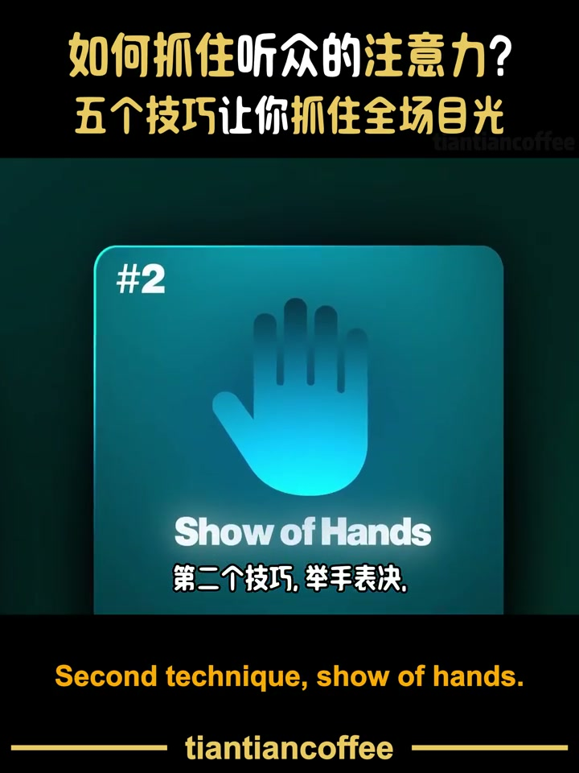

内容要点
[00:00] The moment you start your speech, you've got this
[00:02] Your listeners, full attention
[00:04] Hi, my name is Philip
[00:06] Hmm, losing some
[00:09] Thanks for being here today
[00:12] Today I want to talk about X, Y and Z
[00:15] And it's gone
[00:17] You just lost them
[00:18] Most presenters lose their audience in the first 10 seconds
[00:22] Now why?
[00:23] Because they play it safe
[00:25] They start with their name, their title and some boring context
[00:29] Don't do that
[00:30] Say something that they didn't expect
[00:32] Something that they didn't see coming
[00:34] Here are five simple techniques you can do to start your speech like a pro
[00:39] First technique, surprising statement
[00:42] The average person will eat around 70 insects while sleeping
[00:46] Today, ladies and gentlemen, you'll learn how to keep your home insect-free
[00:51] That one is powerful, but most people, they just rush through
[00:54] They drop the number of facts
[00:56] And before the audience can even process it
[00:58] They're already on to the next point
[01:00] Don't do that
[01:01] Take your time
[01:03] So instead, say your number of facts
[01:05] Then stop talking for like two seconds
[01:08] And then say the full sentence again with that number
[01:11] That pause will help that your listeners can really process it and take it in
[01:16] Second technique, show of hands
[01:18] Quick show of hands
[01:19] Who here likes pineapple on pizzas?
[01:24] Who thinks that it's a crime against humanity?
[01:27] All right
[01:28] And who here has no clue what I'm talking about
[01:33] Show of hands questions are super common
[01:36] But here's the frustrating part
[01:38] A lot of speakers just ignore the responses and just rush through
[01:42] That makes people think
[01:43] Hey, do you actually care about the answer or did you just do that to make it more engaging?
[01:48] So instead, once you've asked that question, we'll pause and look around
[01:52] Acknowledge the answers
[01:53] So you're like, oh wow, that's a lot of people in there
[01:56] Oh, we got the minority in here
[01:58] So acknowledge the responses
[02:00] And third technique, imaginary scene
[02:03] Imagine you're in your favorite cafe
[02:05] You sit on this big comfy chair
[02:07] Coffee in your hand
[02:09] You take a deep sip of this warm coffee
[02:12] Feeling the calm and present moment
[02:14] That's the feeling our customers should have
[02:17] Every time they interact with us
[02:19] Imaginary scenes, they're pretty popular
[02:22] But most people mess them up
[02:23] Because they don't make them visual enough
[02:26] They keep it pretty vague, pretty high level
[02:28] They're like, oh, imagine you have a difficult problem
[02:31] And yeah, that's your problem
[02:34] It's too vague, it's not visual enough
[02:36] Instead, pull them into the moment with some action words
[02:40] Like, walk, sit, drink, smell
[02:43] Those words will make it much more vivid
[02:46] And so when you do that
[02:47] A movie starts playing in your listener's mind
[02:50] And then fourth technique
[02:52] Unexpected silence
[03:00] Welcome, everyone
[03:02] I know this one sounds simple
[03:03] And people know in theory that it's helpful
[03:06] But every single person that I see doing or trying it
[03:10] Well, they don't do it well
[03:11] Because they pause for maybe a millisecond
[03:14] And then they rush into the next
[03:16] So when you do that
[03:17] Take your time, right?
[03:19] Go from one person to the other
[03:21] Without saying a word
[03:23] And then after three to five seconds
[03:25] Boom, then you start
[03:27] This silence is so powerful
[03:30] And fifth technique, story
[03:32] Two weeks ago, I tried to assemble a bookshelf at home
[03:35] And for all the instructions, let's say
[03:37] We're a little bit less helpful
[03:39] Three hours in, I looked at it and like
[03:41] Huh, this looks very wobbly
[03:43] This is barely holding together
[03:45] And I thought like, what the hell, right?
[03:47] I just followed the instructions
[03:48] Rustrated, I checked the manual
[03:51] Only to realize
[03:52] I skipped step one entirely
[03:55] It was so painful
[03:56] I spent the whole evening fixing my own mess
[04:00] And I thought
[04:01] How often do we rush into things
[04:03] Without a clear plan
[04:05] Today, ladies and gentlemen, I want to talk about
[04:07] How to plan better
[04:08] So we're not stuck fixing wobbly shelves later
[04:11] I know stories can be a very big topic
[04:14] But if I can give you just one tip
[04:16] Don't summarize
[04:18] Don't just stay there hovering above the ground
[04:20] Zoom into one specific moment
[04:23] Into one vivid moment
[04:24] Where something is happening
[04:26] Say where you are
[04:27] What are you doing?
[04:28] What are you thinking?
[04:30] What are you hearing?
[04:31] That's what storytelling is about
[04:33] But I know storytelling can sometimes feel
[04:36] Very overwhelming at first
[04:38] Now, if you want to learn
[04:39] How to tell unforgettable stories
[04:41] Check out this next video
[04:42] Where she has some of my favorite
[04:44] Storytelling techniques
[04:45] See you there

